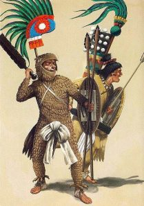

The following is the second part of an article in three installments that initially appeared in July 2016 in Open Theology 2:2016 785-203. It is republished here with the permission of the author. The first installment can be accessed here.
Ethnocentrism to Modern Racism
A particularly interesting trend that occurred within or alongside the secularization of knowledge described in the previous section was the rise of modern racism. In this section, I will attempt to present a rough sketch of some of the important religious and philosophical developments related to the rise of modern racism from the medieval period (7th to 16th century) through the early modern period (16th to 18th century).
As mentioned earlier, the development of racism is a staggeringly complex phenomenon, and it is impossible to do justice to the topic in the space of this paper, so I will be focusing on a few intellectual contributions from religion and philosophy to the development of modern racism which I deem representative and important. These highlighted examples are by no means exhaustive, but they attempt to highlight certain aspects of intellectual history of racism and its relationship with religion.
As stated earlier, I follow numerous scholars, most recently Fredrickson and Isaac in defining modern racism as a belief in the essential nature of a racial character, and the hierarchical ordering of these races/racial characters. Ethnocentrism, or the belief or attitude that one’s ethnic/cultural group is superior to all others is distinguished from modern racism in that ethnicity is not defined as a static, essential aspect of a person’s being. Racial essentialism is all that is needed to transform the hierarchical view implicit in ethnocentrism into full-blown modern racism. The general consensus amongst the literature on the history of racism is that thus-defined, modern racism first emerged in 17th century Western Europe, despite the fact that prejudices, folk mythologies, and socio-economic motives for the development of racism existed in numerous other civilizations and societies throughout history, but the existence of elements hostile to the development of modern racism seem to have prevented its emergence.
Proto-Racism in the Classical Period
In The Invention of Racism in Classical Antiquity, Benjamin Isaac convincingly argues for the existence of what he terms as “proto-racism” in classical Greece and Rome. This proto-racism is distinguished from ethnocentrism, ethnic prejudice or xenophobia in that it attributes “to groups of people common characteristics considered to be unalterable because they are determined by external factors or heredity.”30
For example, Plato, Aristotle, and Herodotus all asserted (and Romans such as Cicero and Juvenal repeated), to one degree or another, that the nature of barbarians was similar to those of slaves, and the nature of Greeks similar to that of masters, and thus it was just that Greek should rule over barbarians, just as masters rule over slaves. Furthermore, these differences in character and nature could be explained to a large degree by the influence of climate upon the temperaments of its inhabitants, and to a lesser extent, the acquired characteristics of their ancestors. Aristotle writes in his Politics
Nature would like to distinguish between the bodies of freemen and slaves, making the one strong for servile labor, the other upright, and although useless for such services, useful for political life in the arts both of war and peace. But the opposite often happens- that some have the souls and others have the bodies of freemen. And doubtless if men differed from one another in the mere forms of their bodies as much as the statues of the Gods do from men, all would acknowledge that the inferior class should be slaves of the superior. And if this is true of the body, how much more just that a similar distinction should exist in the soul? But the beauty of the body is seen, whereas the beauty of the soul is not seen.
It is clear, then, that some men are by nature free, and others slaves, and that for these latter slavery is both expedient and right… And again, no one would ever say he is a slave who is unworthy to be a slave. Were this the case, men of the highest rank would be slaves and the children of slaves if they or their parents chance to have been taken captive and sold. Wherefore Hellenes do not like to call Hellenes slaves, but confine the term to barbarians. Yet, in using this language, they really mean the natural slave of whom we spoke at first; for it must be admitted that some are slaves everywhere, others nowhere.31
The ideas in this passage would be invoked all over Europe throughout the Medieval and particularly in the Modern period in defense of slavery and the hierarchical ordering of humanity. However, it is important to note that in this passage, Aristotle writes that “Nature would like to distinguish between the bodies of freemen and slaves,” but in reality, she does not. What makes a man free or a slave, noble or base, is the condition of his soul, not his body, nor his ethnicity (barbarian or Greek), nor even his status (enslaved or free), but the rank of his soul. Such opinions can be classified as proto-racist however in that many if not most Greek and Roman thinkers held that barbarians in general had souls of inferior rank due to factors such as climate and culture outside of their individual control.
Thus proto-racism differs from modern racism in its philosophical and scientific underpinnings. The racism of the 18th century was based on a mixture of a natural hierarchy and scientific essentialism, linking the biology of racial groups to moral and intellectual qualities, and the proto-racism of antiquity was largely based on a somewhat supernatural hierarchy and cultural and climactic determinism.
Furthermore, the existence of prominent intellectual traditions in which differences in physical ethnicity (along with the physical world in general) were considered far more peripheral and less important to the make-up of man, mitigated these proto-racist views. In 18th century Western Europe, there were no dissenting intellectual traditions of comparable to that of neo-Platonism in the Greco-Roman world at the beginning of the millennium. According to Plotinus,
None the less, in spite of physical resemblance and similar environment, we observe the greatest difference in tempera- ment and in ideas: this side of the human being, then, derives from some quite other Principle [than any external causa- tion or destiny]…The soul of nobler nature holds good against its surroundings; it is more apt to change them than to be changed, so that often it improves the environment and, where it must make concession, at least keeps its innocence.32
However, just as the rational, materialist turn of philosophy of the Renaissance and Enlightenment was pre-figured in the late classical period, Isaac’s work demonstrates the pre-figuration of modern racism in the rise of proto-racism in the late classical period (after 5 B.C.) and Roman Empire. While the argument advanced in the first half of this paper is one possible explanation for the co-occurrence of these trends in antiquity, such an analysis is outside of the scope of this paper, and the fact that the rationalist, materialist turn of the late Greek and Roman intellectual traditions and the post-Renaissance intellectual tradition produced or coincided with similar ideas of racial essentialism can only be seen as circumstantial evidence for this argument. In any event, it is clear from Isaac’s work that Renaissance and Enlightenment scholars revived proto-racist concepts and ideas and derived much of their theories of race from these classical sources.
pre-figured in the late classical period, Isaac’s work demonstrates the pre-figuration of modern racism in the rise of proto-racism in the late classical period (after 5 B.C.) and Roman Empire. While the argument advanced in the first half of this paper is one possible explanation for the co-occurrence of these trends in antiquity, such an analysis is outside of the scope of this paper, and the fact that the rationalist, materialist turn of the late Greek and Roman intellectual traditions and the post-Renaissance intellectual tradition produced or coincided with similar ideas of racial essentialism can only be seen as circumstantial evidence for this argument. In any event, it is clear from Isaac’s work that Renaissance and Enlightenment scholars revived proto-racist concepts and ideas and derived much of their theories of race from these classical sources.
Proto-Racism in the Medieval Period
The literature on race in the medieval Islamic world suggests that while the infidel-believer distinction trumped ethnic and cultural differences, this distinction was often conflated with ethnicity such that strong ethnic prejudices bordering on what Isaac would call “proto-racism” existed under the guise of religious discrimination. Furthermore, the early medieval period was marked by Arab prejudice against non-Arabs and increased interest in heredity and purity of blood. The religious injunction against enslaving fellow Muslims led to the importation of a large number of slaves from sub-Saharan Africa and Eastern Europe and led to an association between sub-Saharan Africans and slavery.33
However, given that heredity was primarily paternally determined (for example, Arab royal families often had maternal African, Persian, and even European ancestry due to the diversity of the wives and concubines of even the rulers of “pure” Arab blood), notions of ethnicity and ethnic hierarchy were far more fluid and detached from physical appearance than in the European classical and medieval worlds. Furthermore, the dominance of Islam in the intellectual and social traditions of the Muslim world continued until the colonial period, and its explicit anti-racial doctrines mitigated these trends of ethnic prejudice by emphasizing the piety and faith of individuals over and above their ethnicity.34
The Christian doctrine of universalism expressed by the apostle Paul as, “For as many as you were baptized into Christ have put on Christ. There is neither Jew nor Greek, there is neither slave nor free, there is neither male nor female; for you are all one in Christ Jesus,”35 also played a significant role in the suppression of ethnic prejudice and racism within medieval Christendom. As in the Muslim world, religion trumped ethnicity officially, but given the relative ethnic homogeneity and insularity of medieval Western Europe as compared to the medieval Muslim and Byzantine worlds, ethnicity and religion were often conflated. To be European meant to be Christian and to be Christian meant to be European.
Thus, it is difficult, if not impossible to separate the ethnic and religious dimensions in negative depictions and descriptions of non-Europeans in the early medieval period. During this period, foreigners, particularly black Africans, were seen as threatening, even demonic heathens (due in large part to the powerful, and expanding Muslim polities which were conquering Europe’s Christian North African neighbors at the time) on the one hand, and a powerful symbol of the universalism and sanctity of Christianity36 on the other. The image of the foreigner as a depraved heathen seems to have reached its peak in the years leading up to the beginning of the 10th Century CE, after which the image of the foreign Christian demonstrating the universality of the Church became more dominant.
 The case of St. Maurice, a 3rd century Egyptian Christian martyr and Roman legionnaire, merits special mention here. St. Maurice (his name means Moor) became the patron Saint of the Holy Roman Emperors, and in 926, Henry I went so far as to cede the present Swiss canton of Aargau to an abbey in return for the saint’s lance, sword and spurs. Due to his Egyptian heritage, St. Moritz was often depicted as a “black Moor” or sub-Saharan African and he was increasingly venerated in the High Middle Ages in Germany and Bohemia, and a 13th century image of him adorns the Cathedral of Magdeburg next to the grave of the Holy Roman Emperor Otto I. However, the status of St. Maurice and other black saints such as Benedict the Moor began to decline in the mid 16th century, probably due to the influence of the African slave trade and the association of blackness with slavery and religio-cultural otherness.37
The case of St. Maurice, a 3rd century Egyptian Christian martyr and Roman legionnaire, merits special mention here. St. Maurice (his name means Moor) became the patron Saint of the Holy Roman Emperors, and in 926, Henry I went so far as to cede the present Swiss canton of Aargau to an abbey in return for the saint’s lance, sword and spurs. Due to his Egyptian heritage, St. Moritz was often depicted as a “black Moor” or sub-Saharan African and he was increasingly venerated in the High Middle Ages in Germany and Bohemia, and a 13th century image of him adorns the Cathedral of Magdeburg next to the grave of the Holy Roman Emperor Otto I. However, the status of St. Maurice and other black saints such as Benedict the Moor began to decline in the mid 16th century, probably due to the influence of the African slave trade and the association of blackness with slavery and religio-cultural otherness.37
Until the advent of African slave trade, however, Western Europeans had relatively little interaction with Sub-Saharan Africans. The medieval Christian encounter with the Jewish population in Europe was to have much greater influence on the development of ideas of race and racial hierarchy in the Western intellectual tradition during this period.
“Jews created a special problem for Christians because of the latter’s belief that the New Testament superseded the Old, and that the refusal of Jews to recognize Christ as the Messiah was preventing the triumph of the gospel,” writes Fredrickson in his study of the history of racism. “Anti-Judaism was endemic to Christianity from the beginning, but since the founders of the religion were themselves Jews, it would have been very difficult for early Christians to claim there was anything defective about Jewish blood or ancestry.”38 This however, changed during the medieval period, as the Jews of Europe became associated with the Jews of the gospel crucifixion who declared, “His blood be upon us and our Children.”39 Jews were increasingly and collectively held responsible for the “worst possible human crime,” that is, deicide.
However, the conversion of the Jews was seen as an important Christian duty and indeed even essential to the salvation of the world based on certain prophecies in the New Testament. Bewildered and frustrated by what must have been perceived as the Jews’ continued refusal to convert and assimilate, and motivated by xenophobia, conflicting economic interests, and martial holy fervor stirred up by the Crusades, the populace of Western Europe began massacring Jews shortly after the First Crusade. To the church and aristocracy however, Jews were useful as fiscal agents, and were tolerated, and sometimes even protected from these mobs. However, at the popular level, a growing folk mythology depicted Jews as inherently evil, still open to the possibility of conversion to Christianity, but inherently opposed to it because of their Jewish heredity. This is one of the first and most important instances of ethnic or racial essentialism linked to an ontological hierarchy in medieval thought.
However, this view remained little more than a folk belief as officially and intellectually, medieval theologians and philosophers held that Jews were ontologically inferior to Christians because of their religion, not their heredity. But this would change in the 16th century. Certain other predominantly-Christian ethnic/cultural groups faced discrimination, ghettoization, and persecution in the late Middle Ages as national identities and cultures began to emerge. The Irish were segregated into separate “Irishtowns” and were legally barred from trade guilds and from marrying Englishmen or women in 14th-century colonial Ireland. Similarly, Slavs and Germans were forbidden to intermarry in the Holy Roman Empire during his period, and German descent was a requirement for holding certain political offices and membership in guilds.
However, such policies were frequently denounced if not actively opposed by the Church as unjust mistreatment of fellow Christians. Fredrickson writes, “What was missing – and why I think such ethnic discrimination should not be labeled racist – was an ideology or worldview that would persuasively justify such practices…these ethnic exclusions were usually the self-interested action of conquering families and lineages and were likely to be condemned by church authorities…”.40 The declining power of the Roman Catholic Church and the emergence of the secular intellectual tradition would allow for the development of such ideologies and worldviews which could support and justify such practices. The most relevant example can be found in 16th -century Spain and the emergence of what I call Iberian proto-racism.
After the completion of the so-called Spanish Reconquista in 1492, threatened with expulsion or death, over a half million Iberian Jews and Muslims converted to Christianity. The converted Muslims, known as Moriscos, were severely persecuted and remained segregated second-class citizens until nearly their entire population was expelled from Spain during the first 20 years of the 17th century. The Jewish converts, known as conversos, were better integrated into Spanish society, and were much more numerous, although they faced serious discrimination on account of their ancestry. They were particularly targeted by the Spanish Inquisition who viewed their Jewish ancestry and cultural distinctiveness as a signs that they had not fully accepted Catholicism, and were prone to revert to Judaism.
The notion of limpieza de sangre (purity of blood), meaning Christian ancestry, became a popular and important belief and even doctrine which was used to define status, Spanish identity, and discriminate against conversos during this period. Several Spanish institutions, including the bishopric of Toledo, and local governments required certificates of pure blood for membership or employment. The concept of “noble blood” was nothing new to Spain, but the large-scale discrimination against a population, and denigration of “blood” based not on nobility but ethnicity was a significant development. As before, this doctrine was justified by the argument that Jewish “blood” made one more resistant to embracing Christianity, but now this folk belief was officially endorsed as doctrine by many officials in the Spanish church.
In light of Lully’s statement on the hierarchy of creation, “The likenesses to the divine nature are imprinted upon every creature according to that creature’s receptive capacities, greater or less in each case…”, Jews perceived lesser degree of receptivity to Christianity equaled a lower placement on the chain of being and therefore the hierarchy of humanity. This may be the first, and certainly was the most prominent case in which ethnicity was officially linked to an ontological hierarchy in post-classical European thought. That is, this seems to be the first time that Jews, or any other people, were officially and doctrinally designated as subhuman due to their ancestry, not their religion. Fredrickson writes,
16th and 17th century Spain is critical to the history of Western racism because its attitudes and practices served as a kind of segue between the religious intolerance of the Middle Ages and the naturalistic racism of the modern era. The idiom remained religious, and what was inherited through the “blood” was a propensity to heresy or unbelief rather than intellectual and emotional inferiority. Innocent “savages” who embraced Spanish civilization and Catholicism did not carry impure blood. Discrimination against Indians persisted after they were baptized, but it was based on culture more than ancestry. Mestizos who had adopted Spanish ways could be admitted to religious orders that excluded Jewish conversos.41
Another important development in history of proto-racism in Spain was the famous debate between Juan Ginés de Sepúlveda and Bartolomé de las Casas over the nature and therefore, status of the native inhabitants of Spain’s new colonial territories. Sepúlveda argued that all native Americans belonged to the Aristotelian category of “natural slaves,” and thus were not in full possession of the rational faculty, and could and should be made useful to the Spanish through enslavement.
Las Casas described the native American indigenes as living under Aristotle and Aquinas’ “natural law” and invoked the Biblical doctrines of Christian universalism to argue that they were potential converts, and thus fellow human beings. Las Casas won the debate, setting the course of official Spanish religious and state doctrine for converting and schooling the “innocent savages” of the new world in Christianity and civilization rather than enslaving them. Following this debate, Pope Paul III issued a bull against slavery, entitled Sublimis Deus, in the year 1537. He wrote:
…The exalted God loved the human race so much that He created man in such a condition that he was not only a sharer in good as are other creatures, but also that he would be able to reach and see face to face the inaccessible and invisible Supreme Good… Seeing this and envying it, the enemy of the human race, who always opposes all good men so that the race may perish, has thought up a way, unheard of before now, by which he might impede the saving word of God from being preached to the nations.
He (Satan) has stirred up some of his allies who, desiring to satisfy their own avarice, are presuming to assert far and wide that the Indians…be reduced to our service like brute animals, under the pretext that they are lacking the Catho- lic faith. And they reduce them to slavery, treating them with afflictions they would scarcely use with brute animals… by our Apostolic Authority decree and declare by these present letters that the same Indians and all other peoples – even though they are outside the faith – …should not be deprived of their liberty… Rather they are to be able to use and enjoy this liberty and this ownership of property freely and licitly, and are not to be reduced to slavery…[emphasis mine]42
However, given the declining temporal power of the Church (sovereigns were no longer cowed by the threat of excommunication, and in fact the Popes often had to bow to political pressures from military and political leaders), Spanish practice differed, often significantly, from official doctrine. Nevertheless, even if this doctrine was not effective in dictating the behavior of conquistadors and colonists, it remained influential in shaping their worldviews. For example, Europeans in general preferred buying already enslaved people, to enslaving people themselves, not only saving themselves labor, time, and money, but cleverly eluding the papal interdiction against “depriving” peoples of their liberty. The Spanish also followed another one of Las Casas’ suggestions from the debate, using Africa as a source of slave labor.
The medieval Spanish predominantly encountered sub-Saharan Africans as the slaves of the lighter- skinned Moors, since the Moors, like the medieval Christians were forbidden to enslave members of their own religion, the cheapest source of slave labor in the Maghreb were the non-Muslim peoples of the Western Sahel. The medieval Moors also held light-skinned slaves from Europe, North Africa, and even Asia, but due to their higher price, they were spared the more menial and physical tasks which fell to the African slaves.43
Thus, even before the advent of the trans-Atlantic slave trade, the Spanish had come to associate Sub-Saharan Africans with menial labor and slavery, and Aristotelian category of “natural slave.” As the last Slavic groups in the east converted to Christianity in the early 16th century and the Europeans gradually stopped selling each other as slaves, Portuguese navigators opened up the West African slave market, and the colonial missions and papal interdiction against enslaving “Indians” created a strong demand for labor in the New World.
The brutal exportation and exploitation of African slaves “fit the bill” for many reasons, among which are that the Spanish and Portuguese already associated sub-Saharan Africans with menial slave labor, they could buy African slaves and did not need to enslave them, circumventing potential problems with the Church, and being heathens, Africans were not entitled to the same kinds of rights or considered to be of the level of humanity as other Christians. In fact, the Protestant Dutch and English limited missionary activity within their slave colonies because slave-owners worried that baptism would give the enslaved a claim to freedom. Simultaneously, however, slave traders and plantation owners presented their activities to the Church as part of a civilizing/Christianizing mission.
The Catholic Church and the newly formed Protestant denominations both condemned and were simultaneously complicit in both the brutal institutions of the exportation of Africans across the Atlantic and their exploitation in the New World. However, the official intellectual position of the majority of religious figures during the 16th and early 17th centuries remained that of Christian universalism, even in the face of racialized slavery and popular justifications such as the curse of Ham.44 The racialized nature of the Atlantic slave trade is best understood as an example of popular European thought and practice ignoring or circumventing the crumbling political, moral, and intellectual authority of the Church. In this case, popular practice and belief in proto-racism preceded its intellectual justification.
Thus the stage was set for the rise of modern racism in the 18th century. The official medieval doctrine of Christian universalism was weakened by the anti-Semitism of the Spanish Inquisition which enshrined popular beliefs about the resistance of Jews to Christianity in official doctrine, and consistent with the logic of the medieval chain of being, classified them as subhuman, providing an official religious and intellectual justification for their persecution. By asserting that conversos, although Christian, were inferior due to their ethnicity, Iberian proto-racism developed the idea of racial essentialism.
Moreover, the classification of Black Africans as Aristotelian “natural slaves,” Indians as “innocent savages living under natural law,” and the Spanish as the defenders and champions of the “One True Faith” created a color-coded racial hierarchy. In Iberian proto-racism we find both the beginnings of racial essentialism and racial hierarchy, but “to achieve its full potential as an ideology, racism had to be liberated from Christian universalism.”45 Although the Catholic Church, and Christianity in general, lost much political power and intellectual control during this period, the intellectual authority of basic Christian doctrines such as universalism had not yet been directly challenged by secular ideologies.
Furthermore, the medieval social hierarchy also had to be overturned for modern racism to emerge. In medieval society, social inequality based on birth was nearly universal, as everyone from the king to the peasant found him or herself in a hereditary social position, and to be human meant to be part of a hierarchy. The enslaved status of Africans in particular fit this general pattern of hierarchal social arrangements, and thus did not necessarily exclude them from the sphere of humanity.
Their enslaved status could not fully contribute to their philosophical dehumanization until this status became intellectually and socially exceptional, as it did in the 18th century Enlightenment, when human relations came to be viewed as egalitarian. Paradoxically, the rise of egalitarianism contributed to the dehumanization of Africans in particular, but also of other races of humanity, in that their position outside of egalitarian societies marked them as being outside of human society.
Oludamini Ogunnaike is a post-doctoral fellow at Stanford University and a scholar of African, Islamic, and religious studies, with a focus on the intellectual and artistic dimensions of West African Sufism and Ifa, an indigenous Yoruba religious tradition. His work examines the postcolonial, colonial, and precolonial Islamic and indigenous religious traditions of West Africa, seeking to understand the philosophical dimensions of these traditions by approaching them and their proponents not merely as sources of ethnographic or historical data, but rather as distinct intellectual traditions and thinkers, and even as sources of theory and possible inspirations for methods of scholarship in the humanities and social sciences. Oludamini is also working on an online database of West African Sufi Poetry and, along with Ayodeji Ogunnaike, is working on a similar database for the Odu Ifa (the sacred orature of Ifa). He is a graduate of Harvard College and earned his PhD from Harvard University’s Department of African and African American Studies.
_______________________________________________________________________
30. Isaac, The Invention of Racism in Classical Antiquity, 38.
31. Aristotle, Politics I, Chapter V-VI.
32. Plotinus, Enneads III 5-8 (italics mine).
33. Lewis, Race and Color in Islam.
34. The collections of Abu Dawud and Tirmidhi contain the following hadith, “The Prophet said: Let people stop boasting about their One is only a pious believer or a miserable sinner. All men are sons of Adam, and Adam came from dust” and this passage from the Prophet Muhammad’s last sermon is often cited, “An Arab has no superiority over a non-Arab nor a non-Arab has any superiority over an Arab; also a black has no superiority over white, nor a white has any superiority over black, except by piety and good action (taqwa). Indeed the best among you is the one with the best character (taqwa)” along with the following (unsubstantiated) saying, “Your Lord is One. Your ancestor is one. Your religion is one. Take heed. Arabism is not conferred on you through your mother or father. It is through the tongue (i.e. the language of Arabic), so whoever speaks Arabic, he is an Arab.”
35. Galatians 3:27-9,
36. Bindman, David, Henry Louis Gates, and Karen C. C. Dalton. The Image of the Black in Western Art. Vol II, Part 1, From Demonic Threat to the Incarnation of Sainthood and Part 2 Africans in the Christian Ordinance of the World (14th to 16th century).
37. Ibid
38. Fredrickson, Racism: A Short History, 18.
39. Mathew 27:25, KJV.
40. Fredrickson, Racism: A Short History, 24.
41. Ibid, 40.
42. Parish, Bartolomé de las Casas, The Only Way, 114-115.
43. See Lewis, Race and Color in Islam.
44. From the story of Genesis 9:20-7 in which Noah cursed the descendants of his son Ham for his indiscretion. The curse actually refers to Ham’s son Canaan, “And he said, Cursed be Canaan; a servant of servants shall he be unto his brethren” (verse 25). Although the Torah assigns no racial characteristics to Ham, the Cushites and Egyptians are numbered amongst his progeny, however these “black” peoples are not numbered amongst the descendants of Canaan in the Torah, and thus it assigns no racial characteristics to the The association of the curse of slavery with dark skin apparently originated in the Rabbinic literature and later entered classical Christian and Islamic literature where it was strongly contested by a number of scholars who pointed out that the curse was on Canaan, the progenitor of the Philistines, and not Ham himself. Despite these intellectual refutations, the story remained a popular, but contested, explanation and justification for the enslavement of dark-skinned peoples from the 3rd century through the 20th.
45. Fredrickson, Racism: A Short History, 47.